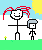

manalas
I first got a random image and inserted it into photoshop. I then altered the way it looked like the filter and started duplicating it. I started changing the direction some go and it looked like a new image. I managed to make it blend into each other to turn into a kaleidoscope.
Playboi Dog

I came up with a wolf because it’s the animal that truly represents who I am as a person. Then I chose the musician Playboi Carti to act as the humanoid for the project. The picture shows him with a helmet which easily allowed me to replace it with the wolf head. Lastly I gave my humanoid beast a lightsaber which in my opinion truly makes my beast fantastic among others and its power is to swing its lightsaber around super quickly and has super fast reflexes.
Vibe Project

I used the program Adobe Express to begin the outline for this project. I mainly used pictures that portrayed the food and deserts that I love to consume. Some of these include seafood, fruits, and vegetables like salmon, oranges, avocados and broccoli. I also included some pastries like donuts and cookies. One of the images shows a man putting his thumb up in front of a board containing some of the foods I mentioned while the other shows a woman holding a cherry tomato in front of a sliced baguette. All of these images match my aesthetic because not only do I love the food itself, but I also love the art of creating the food as well.
DL Boys

I changed the colors using the eyedropper tool and chose the colors I highlighted from the original picture. I used the quick selection tool to outline my figure. The celebrity I chose for this project is famous underground rapper Destroy Lonely because he’s one of my favorite artists at the moment. I then replicated the picture into 4 different layers and changed the color pattern for each of them.
.
Pixel

I changed the colors using the eyedropper tool and chose the colors I highlighted from the original picture. I used the quick selection tool to outline my figure. The celebrity I chose for this project is famous underground rapper Destroy Lonely because he’s one of my favorite artists at the moment. I then replicated the picture into 4 different layers and changed the color pattern for each of them.
.